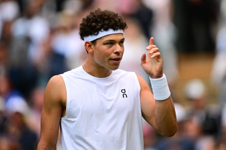

T o spend even a little time at Wimbledon is to drown in the sheer scale of things. This is a place of mind-boggling numbers: the 40 miles of racket string, the 55,000 balls, the 300,000 glasses of Pimm’s, the 2.5m strawberries. But Wimbledon’s true staple good is none of these. The most abundant product every Wimbledon fortnight is the word. And even on a rain-affected, slow news day, the words must keep coming.
As with everything else, Wimbledon procures its words with a suitable reverence. Post-match interviews, in contrast to the more informal on-court setup at Melbourne and New York, are conducted at a respectful distance in front of a microphone stand, as if Jannik Sinner were actually a high-school student about to spell a very difficult word. But of course the majority of Wimbledon’s bluff and bluster takes place in a small windowless upstairs chamber that most tennis fans have never even seen.
Here the ladies, gentlemen and species-unidentified of the international media perch on seats of dark green leather, accompanied by a professional stenographer who will assemble their efforts into a printed transcript within minutes. An invigilator at the dais keeps order and time, beginning the exchange with a question of almost artistic beigeness (“Emma, just talk a little bit about the match today, please.” “Anastasia, through to the next one. You must be really pleased.”)
Welcome to the tensions, the tantrums and the downright tedium of the Wimbledon press conference room. Layers of ornamentation and years of solemn tradition have gone into this sacred human ritual, by which a professional tennis player is invited to emit words from their mouth. You can’t just swan in and ask questions. Albeit, that’s exactly what you can do. But there are customs and currents to be learned here.
The British tabloid hacks hate the pompous American pseuds. The nerdy tennis bloggers hate the vapid gossip columnists. Everyone seems to hate the guy from the ATP who asks stilted, weirdly phrased questions for the sole purpose of generating montage voiceover content. Some are here for insight, some for a headline, some for atmosphere and some for virality. What’s interesting to one reporter may not be remotely interesting to another. But at the Wimbledon press conference, everyone has to sit through all of it.
By and large the geeky technical stuff, the pompous big-picture stuff and the rambling two-minute questions tend to come from the Americans. “Taylor Fritz, how do you feel your game on grass has evolved?” “Ben Shelton, talk about the origin of your backhand slice.” I remember one guy about a decade ago who asked every single player who walked into the room the same question: “With Nelson Mandela in very serious condition, what are your thoughts on his life and legacy?”
Ben Shelton has been asked about the origins of his backhand slice by nerdy American journalists.Photograph: Victoria Jones/Shutterstock
By contrast, the Fleet Street tabloid reporters are often seconded from the football desk, armed with only the most basic of tennis knowledge and after a snappy line. “Plucky Brit loser, what are you going to blow your first-round cheque on ?” Sonay Kartal fields innumerable enquiries on her tattoos: current, future, hypothetical. Meanwhile Anastasia Pavlyuchenkova’s contentious line call against Kartal allows them an opportunity to rehash that most treasured of modern footballing obsessions: the VAR controversy. So far, so rote. But of course the danger of allowing anyone to ask a question is that occasionally those questions will be extremely stupid.
Iga Swiatek gets seven questions in a row on strawberries. Amanda Anisimova gets asked whether her luggage has ever gone missing. Then there are the plain creepy questions, a tradition almost as old as Wimbledon itself. From a 17-year old Maria Sharapova being asked whether she enjoys being “a pin-up” to Cameron Norrie being asked by a complete stranger whether he’s dating Emma Raducanu, too often the press conference acts as a sort of dickhead intensifier, legitimising the sort of inquiries that would get you punched in the street.
But of course the vast majority of a Wimbledon press conference falls into the more mundane category: limp platitudes forgotten the moment they hit the air. Is there a better way of doing this? Does this protracted bonfire of words serve any real purpose beyond the symbolic? Any decent journalist will tell you that the best way of getting an interviewee to open up in is a more relaxed, informal, setting. (Being able to generate these situations is, of course, the hallmark of a good journalist.) But in many ways the press conference is calibrated to generate the very opposite: an anti-intimacy, a kind of transactional, mass-produced, lowest-common-denominator slop that fails to get the best out of anyone.
Which is not to say the masquerade is entirely without function. When more serious stories arise, like Alexander Zverev appearing in court or Sinner failing a doping test , the press conference remains the only realistic forum for asking them about it. And in an age when winnowing access has reduced most athlete engagement to the trite level of “who’s the worst dancer in the dressing room?”, proper journalists can generate thought-provoking, contextual answers that enhance our understanding of the sport. “When people are coming with genuinely good questions, I enjoy giving thoughtful, genuine, good answers,” says Fritz.
Does the ultimate solution lie in a kind of quality control, a more rigorous access process that separates the aficionados from the shit-stirrers? Is the unwieldy, imperfect press conference simply the least unwieldy and imperfect of all conceivable alternatives? And on a deeper level, what do athletes owe us? Do they need to be held to account and who gets to decide who can do so? But of course these are simply more questions. And if we’ve learned anything here, it’s that Wimbledon has more than enough of those already.